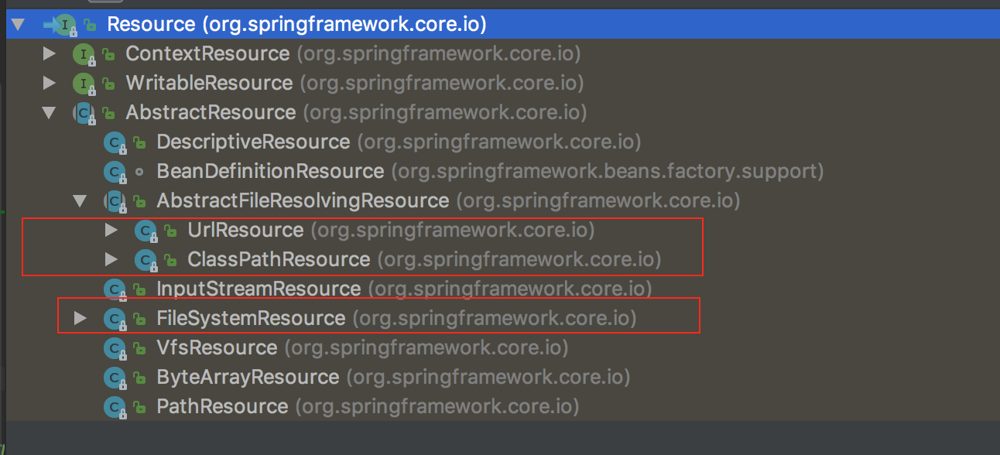
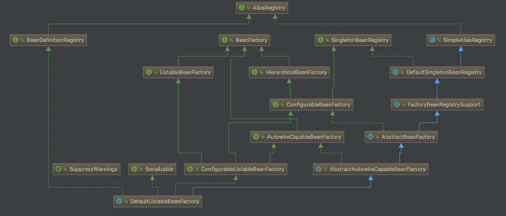

Spring 源码学习之 IOC
一、源码说明
说明：本文分析的是 SpringFrameWork（5.0.5.RELEASE）IOC 部分的源码。
IOC：inversion of control，控制反转。应用程序将对象的控制权移交给第三方容器，并通过容器来管理这些被依赖的对象，完成了应用程序与被依赖对象的解耦。
以下就是使用 Spring 进行控制反转的经典案例：
1 | public static void main(String[] args) { |
二、设计模式
Spring IOC 主要用到了三种设计模式：
- 工厂模式：
ApplicationContext构建的DefaultListableBeanFactory类型的 BeanFactory，范例参见下文步骤拆解。 单例模式：如果是单例 bean，将在
AbstractBeanFactory.java的doGetBean()方法中进行实例化，见下代码：1
2
3
4
5
6
7
8
9
10
11
12//仅展示部分代码
if (mbd.isSingleton()) {
sharedInstance = getSingleton(beanName, () -> {
try {
return createBean(beanName, mbd, args);
}
catch (BeansException ex) {
destroySingleton(beanName);
throw ex;
}
});
bean = getObjectForBeanInstance(sharedInstance, name, beanName, mbd);
将beanName和RootBeanDefinition拿到创建 bean 并初始化 bean。
- 策略模式：Spring 会调用 ApplicationContext 来获取 Resource 的实例，但 Resource 接口封装了多种资源类型，见下图：

Spring 采用策略模式，选择恰当的资源访问方式，用以适应不同的资源类型。本文的 xml 配置文件，就是由 Spring 调用ClassPathXmlApplicationContext类来读取的。
三、步骤拆解
首先ApplicationContext的继承关系如下图：

其中ClassPathXmlApplicationContext是通过读取 xml 文件来构建ApplicationContext。另外一种通过注解实现的方式，本文暂不涉及。
（1）创建beanFactory
1. 处理路径信息
1 | /* Class: ClassPathXmlApplicationContext |
refresh()执行的是初始化ApplicationContext的工作
2. 创建BeanFactory
- 创建
DefaultListableBeanFactory类型的BeanFactory

上图为DefaultListableBeanFactory的继承关系图，它继承了BeanDefinitionRegistry和ListableBeanFactory，是绝佳的BeanFactory。
1 | /* Class: AbstractApplicationContext |
（2）bean 的配置、加载、注册
3. 配置是否允许循环依赖和是否允许 Bean 定义的覆盖
1 | /* Class: AbstractRefreshableApplicationContext |
4. 根据配置信息加载 Bean，并放入 BeanFactory 中
1 | /* Class: AbstractRefreshableApplicationContext |
由XmlBeanDefinitionReader对象完成 xml 文件的读取，如果有多个 xml 文件，会一并获取。
5. 将配置信息中的资源（非懒加载的 bean）注册入 beanFactory 中。
1 | /* Class: AbstractApplicationContext |
preInstantiateSingletons()方法将所有 bean 标签属性取出，先判断非 abstract、非懒加载、单例模式，再判断非 FactoryBean 对象后，执行getBean(beanName)方法。- 然后调用
getSingleton(beanName)方法检查是否已创建，调用getParentBeanFactory()方法检查此 BeanDefinition 是否已经存在于容器中。 - 调用
mbd.getDependsOn()初始化所有依赖，并检查是否有依赖关系。
从 314 行到 367 行，是根据是否 singleton、Prototype等调用getObjectForBeanInstance方法创建出 bean instance。
到此，所有非懒加载的 singleton beans 都已经完成初始化。
（3）getBean()拿到实例完成方法调用
6. 拿到上面生成的 bean instance
1 | MessageService messageService = context.getBean(MessageService.class); |
- 调用
context.getBean()方法后，会进入AbstractBeanFactory类中的doGetBean()方法中，在上一节步骤 5 中已经通过此方法创建了 bean 的实例，所以此处可以直接拿到此实例 - 然后完成实例方法的调用